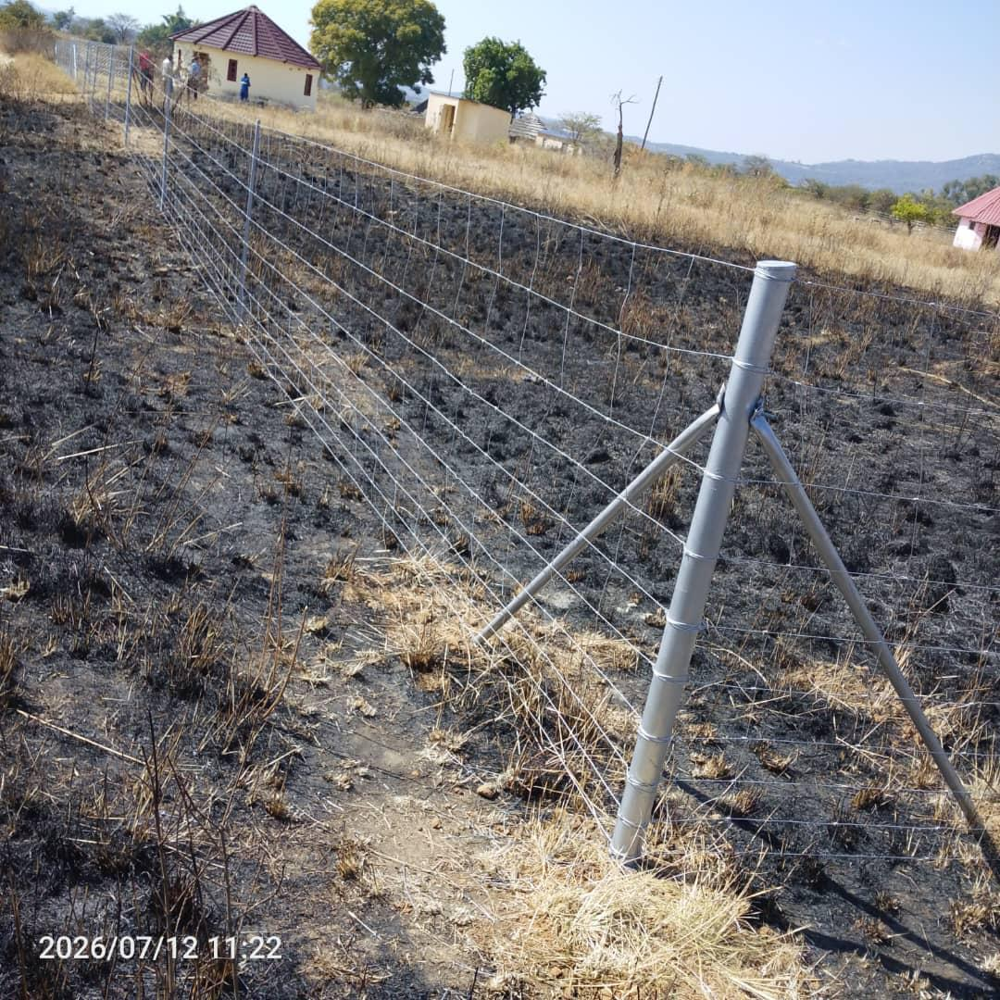

Built for Livestock. Trusted by Farmers. Proven in the Field.

Azzar Field Fence is engineered for Zimbabwe's toughest farm conditions — large animals, open terrain, and variable weather. Manufactured from high-tensile galvanised wire with graduated spacing, it provides long-lasting boundary control while remaining flexible enough to absorb impact without breaking.
Whether you're fencing cattle, goats, sheep, or wildlife, this is a solution that works season after season with minimal maintenance.
Rated to hold large livestock including cattle under sustained pressure without deforming or collapsing.
Graduated spacing at the bottom prevents small animals from pushing through or getting trapped in the mesh.
Strong enough to contain wildlife while flexible enough to handle the natural movement of game animals without breakage.
Define large farm perimeters cost-effectively with long-distance runs across open terrain.
Mark and secure rural land boundaries while providing a visible, durable deterrent to trespassers.
Works across all livestock types and can be combined with barbed wire topping for additional security.
Azzar fenced our entire farm boundary — over 3km — professionally and on schedule. The quality of work is excellent and the team was highly professional throughout.